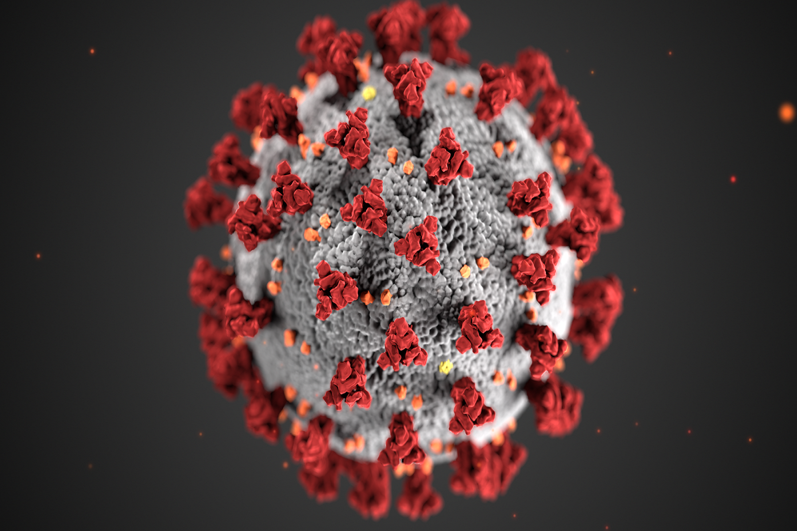

What is COVID-19?
Coronavirus disease 2019 (COVID-19) – ‘CO’ stands for corona, ‘VI’ for virus, and ‘D’ for disease – is a disease caused by a new strain of coronavirus first identified in Wuhan, China.
COVID-19 has been described as a pandemic by the World Health Organization. What does that mean?
Characterizing COVID-19 as a pandemic is not an indication that the virus has become deadlier. Rather, it’s an acknowledgement of the disease’s geographical spread.
What are the symptoms?
Many COVID-19 symptoms are similar to those of the flu, the common cold and other conditions, so a test is required to confirm if someone has COVID-19. Symptoms may appear 2 to 14 days after exposure to the virus and can range from very mild to severe illness. Some people who have been infected don’t have any symptoms.
The most common symptoms are fever, cough, and tiredness. Other symptoms can include shortness of breath, chest pain or pressure, muscle or body aches, headache, loss of taste or smell, confusion, sore throat, congestion or runny nose, diarrhoea, nausea and vomiting, abdominal pain, and skin rashes. In addition to these symptoms, infants may have difficulty feeding.
Children of any age can become ill with COVID-19. While children and adults experience similar symptoms, children generally have less serious illness than adults. (See “Does COVID-19 affect children?”)
Symptoms requiring urgent medical attention include difficulty breathing/fast or shallow breathing (also grunting, inability to breastfeed in infants), blue lips or face, chest pain or pressure, confusion, inability to awaken/not interacting, inability to drink or keep down any liquids, severe stomach pain.
Also, there is a vaccine for the flu – so remember to keep yourself and your child up to date with vaccinations.
Is there a vaccine for COVID-19?
Developing a safe and effective vaccine takes time, but thanks to the unprecedented investment in research and development and global cooperation, scientists have been able to develop a vaccine against COVID-19 in record time, while still maintaining robust, evidence-based and rigorous regulatory standards.
> Read: What you need to know about a COVID-19 vaccine
Will my child be able to get the COVID-19 vaccine?
Children’s immune systems are different from those of adults and can vary significantly depending on their age. Children were not included in the initial trials for COVID-19 vaccines, so more research is needed into whether the COVID-19 vaccine will also be safe for them. We’ll update the recommendations as more information becomes available, but in the meantime, continue to follow national and local guidance on helping to prevent the spread of COVID-19.
I’ve heard there are variants of the virus that causes COVID-19. What does this mean?
It’s normal for viruses to mutate over time. Experts are constantly monitoring new variants of the coronavirus that causes COVID-19 to see if they spread more easily, cause more severe disease, or could have an impact on the effectiveness of vaccines. Some new strains of the virus appear to be more contagious, but the evidence so far does not suggest that they make people sicker.
The best way to limit and suppress the transmission of COVID-19 is for people to continue to follow existing advice on preventing the spread of the virus, including regular handwashing, physical distancing, wearing masks where appropriate, and keeping indoor areas well ventilated.
> Read: How can I protect myself and others from COVID-19?


Are any of these new COVID-19 variants more dangerous for children?
Experts from around the world are continuing to monitor these variants to better understand their impact, including on children. Some variants, such as the one that was first identified in the United Kingdom, appear to be more transmissible among people, including children. Research is ongoing to understand if and to what extent new variants may cause more severe illness in those infected. So far, the evidence doesn’t suggest that these variants are specifically targeting children, and severe illness in young people remains relatively rare.
Parents should continue to encourage their children to take the same precautions as before to help prevent getting and spreading COVID-19.
I’ve been vaccinated, do I still need to get tested for COVID-19?
If you have been fully vaccinated but are showing symptoms of COVID-19, you should contact your doctor about whether you should get tested.
What is ‘Long COVID’? Can children be affected?
Post COVID-19 condition, also sometimes referred to as ‘Long COVID,’ is a term used to describe symptoms persisting for weeks or months in some people after the initial recovery from COVID-19 infection.
More research is needed to better understand the long-term effects of COVID-19, but young adults and children without underlying chronic medical conditions, as well as those who experienced mild symptoms during acute COVID-19 infection, have also been affected. The number of children with Long COVID is unclear, but surveys suggest symptoms in children can include fatigue, gastro intestinal problems, sore throats, headaches, and muscle pain and weakness.
Children and adolescents may also be affected by multisystem inflammatory syndrome in children (MIS-C), a rare but serious condition that appears to be linked to COVID-19. (See here for more information on the associated symptoms).
If your child or a family member is experiencing new or persistent symptoms following acute COVID-19 infection, you should consult your healthcare provider.
How can I protect myself and others from COVID-19?
Here are some precautions you and your family can take to help avoid infection:
Wash your hands frequently using soap and water or an alcohol-based hand rub (Read: Everything you need to know about washing your hands to protect against COVID-19)
Cover mouth and nose with flexed elbow or tissue when coughing or sneezing. Dispose of used tissue immediately
Keep at least 1 metre distance between yourself and others
Regularly clean and disinfect frequently touched surfaces like phones, doorknobs, light switches and countertops
Seek medical care early if you or your child has a fever, cough, difficulty breathing or other symptoms of COVID-19
Avoid crowded places, confined and enclosed spaces with poor ventilation, and try to practice physical distancing from people in public
Wear fabric masks when in public places where there is community transmission and where physical distancing is not possible
Keep all indoor spaces well ventilated

Should I wear a medical mask?
The use of a medical mask is advised if you have respiratory symptoms (coughing or sneezing) to protect others, or if you are caring for someone who may have COVID-19.
If masks are worn, they must be used and disposed of properly to ensure their effectiveness and to avoid any increased risk of transmitting the virus. Disposable face masks can only be used once.
The use of a mask alone is not enough to stop infections and must be combined with frequent hand washing, covering sneezes and coughs, and avoiding close contact with anyone with cold or flu-like symptoms (coughing, sneezing, fever).
> Read: COVID-19 and masks - Tips for families
What should I do if my child has symptoms of COVID-19?
Seek medical attention, but remember symptoms of COVID-19 such as cough or fever can be similar to those of the flu, or the common cold – which are a lot more frequent.
Continue to follow good hand and respiratory hygiene practices like regular handwashing so that your child is protected against other viruses and bacteria causing diseases.
As with other respiratory infections like the flu, seek care early if you or your child are having symptoms, and try to avoid going to public places (workplace, schools, public transport), to prevent it spreading to others.
What precautions should I take for my family if we travel?
Anyone planning a trip should always follow local and national guidance on whether it is advisable to travel. Those travelling should check the advisory for their destination for any restrictions on entry, quarantine requirements on entry, or other relevant travel advice. Follow the same personal protection measures during travel as you would at home.
In addition to taking standard travel precautions, and in order to avoid being quarantined or denied re-entry into your home country, you are also advised to check the latest COVID-19 update on the International Air Transport Association website, which includes a list of countries and restriction measures.
While travelling, all parents should follow standard hygiene measures for themselves and their children, such as washing hands properly and avoiding close contact with anyone who is coughing or sneezing. Additional recommendations include: Clean your seat, armrest, touchscreen, etc. with a disinfecting wipe once inside an aircraft or other vehicle. Also use a disinfecting wipe to clean key surfaces, doorknobs, remote controls, etc at the hotel or other accommodation where you and your children are staying.
> Read more tips for travelling with your family during COVID-19
Can pregnant women pass coronavirus to unborn children?
At this time, there is not enough evidence to determine whether the virus is transmitted from a mother to her baby during pregnancy, or the potential impact this may have on the baby. This is currently being investigated. Pregnant women should continue to follow appropriate precautions to protect themselves from exposure to the virus, and seek medical care early, if experiencing symptoms, such as fever, cough or difficulty breathing.
Is it safe for a mother to breastfeed if she is infected with coronavirus?
All mothers in affected and at-risk areas who have symptoms of fever, cough or difficulty breathing, should seek medical care early, and follow instructions from a health care provider.
Considering the benefits of breastfeeding and the insignificant role of breastmilk in the transmission of other respiratory viruses, the mother can continue breastfeeding, while applying all the necessary precautions.